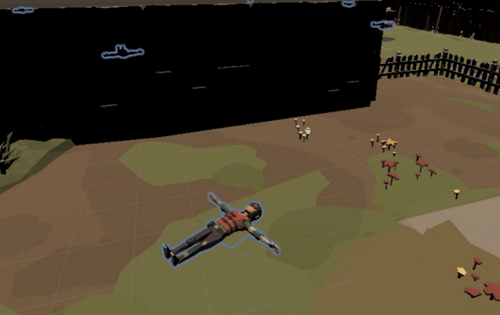
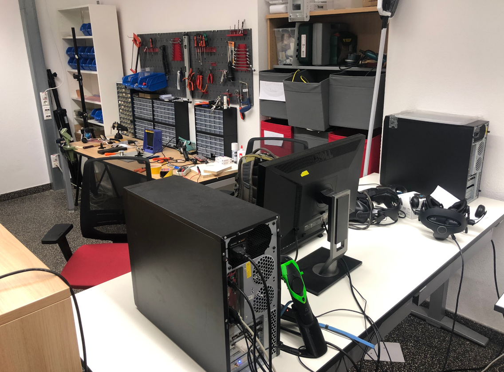

Virtual reality meets robotics.
In the summer of 2022, I joined the Telecooperation lab at the Technical University of Darmstadt, where I worked on a project called HectorVR. This was a joint project between TU Darmstadt's Telecooperation (HCI) lab and Hector robotics team. HectorVR allows users to remotely control rescue robots through a virtual reality interface.
The application was mainly written in ROS and Unity. I worked with the VR control scheme as well as the sensor/telemetry pipeline. Despite being hindered by COVID restrictions, this internship was a great learning experience and served as a peek into what academic research is like.
